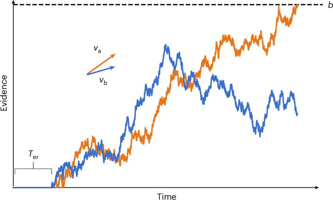
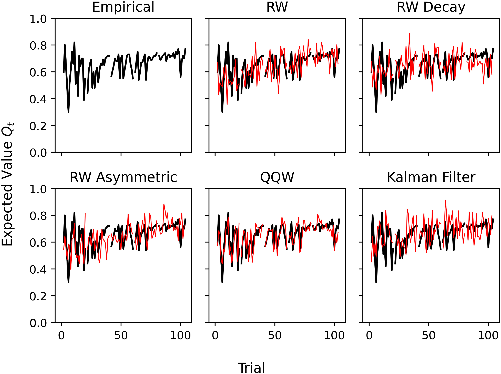

Decision dynamics are organized around two linked levels of analysis: within decision dynamics and between decision dynamics. The within level isolates how emotion and cognition interact inside an individual over time to shape evidence accumulation, policy adjustment, and choice. The between level models how those dynamics propagate across contexts, tasks, and social environments through feedback, coupling, and adaptation. Together, these levels provide a unified framework for explaining how local decision processes scale into broader patterns of learning, judgment, and behavior.
Within Decision Dynamics
This level isolates the dynamics that govern decisions within an individual over time, including evidence accumulation, policy adjustment, and latent attitude expression under uncertainty.
Click to expand/collapse publications.

LaFollette, Rubez, Demaree, & Goldenberg, Nature Human Behaviour (2026), Fig. 2.
Within Decision Dynamics
This level isolates the dynamics that govern decisions within an individual over time, including evidence accumulation, policy adjustment, and latent attitude expression under uncertainty.

Published
- LaFollette, K. J., Rubez, D., Demaree, H. A., & Goldenberg, A. (2026). Challenging the mechanism for the implicit association test. Nature Human Behaviour. https://doi.org/10.1038/s41562-026-02439-y
- Goldenberg, A., LaFollette, K. J., Huang, Z., Weisz, E., & Cikara, M. (2025). Judgment of crowds as emotional increases with the proportion of Black faces. Scientific Reports. https://doi.org/10.1038/s41598-025-95029-3
- LaFollette, K. J., Fan, J., Puccio, A., & Demaree, H. A. (2024). FlexDDM: A flexible decision-diffusion Python package for the behavioral sciences. Proceedings of the Annual Meeting of the Cognitive Science Society, 46.
- LaFollette, K. J., & Demaree, H. A. (2022). Comparing the effects of stress on directed and random exploration. Proceedings of the 5th Multidisciplinary Conference on Reinforcement Learning and Decision Making.
- LaFollette, K. J., Kotynski, A. E., Merner, A. R., Lim, R., Jiang, H., & Demaree, H. A. (2021). Exposure to discrete emotions influence processes of evidence accumulation in reinforcement-learning. Proceedings of the Annual Meeting of the Cognitive Science Society, 43, 486-492.
In Review
- LaFollette, K. J., Fan, J., Puccio, A., & Demaree, H. A. (Under Review). Democratizing diffusion decision models: A comprehensive tutorial on developing, validating, and fitting diffusion decision models in Python with FlexDDM. https://doi.org/10.31234/osf.io/j9m67
- Rubez, D., Vazquez, J. I., & LaFollette, K. J. (Revise & Resubmit). From structure to mindset, not mobility: Neighborhood scarcity drives implicit attitudes toward change.
In Preparation
- Barnett, M. K., LaFollette, K. J., & Macnamara, B. N. Recalculating avoidance: Math anxiety predicts avoidance of effortful problem solving.
Between Decision Dynamics
This level models how decision and affective dynamics propagate across time, task environments, and social context, including social sharing, endogenous-exogenous coupling, and nonlinear adaptation.
Click to expand/collapse publications.

LaFollette, Yuval, Schurr, Melnikoff, & Goldenberg, PNAS (2025), Fig. 4.
Between Decision Dynamics
This level models how decision and affective dynamics propagate across time, task environments, and social context, including social sharing, endogenous-exogenous coupling, and nonlinear adaptation.

Published
- LaFollette, K. J., Yuval, J., Schurr, R., Melnikoff, D., & Goldenberg, A. (2025). Data-driven equation discovery reveals nonlinear reinforcement learning in humans. PNAS. https://doi.org/10.1073/pnas.2413441122
- LaFollette, K. J., Frank, D. J., Burgoyne, A. P., & Macnamara, B. N. (2026). Task, person, and experiential characteristics drive the transfer of learning. Communications Psychology. https://doi.org/10.1038/s44271-026-00408-9
- Barnett, M. K., LaFollette, K. J., & Macnamara, B. N. (2024). Distraction in math anxious individuals during math effort-based problem solving. Proceedings of the Annual Meeting of the Cognitive Science Society, 46.
In Review
- LaFollette, K. J., Frank, D. J., Burgoyne, A. P., & Macnamara, B. N. (Under Review). Multi-tasking versus multi-learning: Performance but not learning suffers when pursuing simultaneous goals.
- Prince, C., Demaree, H. A., & LaFollette, K. J. (Revise & Resubmit). Internal and external forces shape human emotion (DynAffect-C line). https://doi.org/10.31234/osf.io/jvxza_v3
In Preparation
- LaFollette, K. J., Demaree, H. A., & Goldenberg, A. Social sharing modulates the dynamics of affective arousal. Working paper.
- LaFollette, K. J., & Demaree, H. A. Affect shapes sequential risky choice differently from financial outcomes: Evidence from sparse equation discovery across four gambling paradigms.
- LaFollette, K. J., Frank, D. J., Burgoyne, A. P., & Macnamara, B. N. The dynamic advantage: Static training fails to prepare learners for changing real-time testing.
- LaFollette, K. J., Demaree, H. A., & Goldenberg, A. A bottom-up equation discovery approach in momentary emotion analysis.